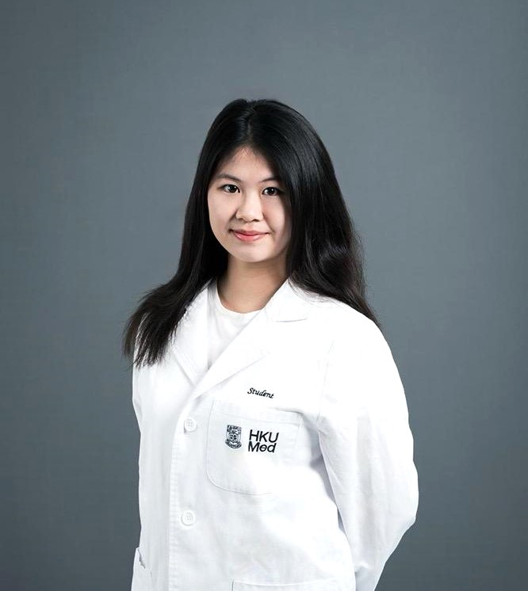
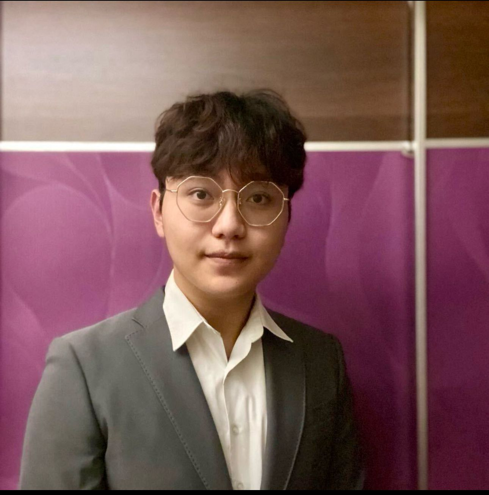

關於我們
協會宗旨、團隊與發展藍圖
協會宗旨與發展方向
本會以推動大灣區醫療發展為核心宗旨，致力於促進醫療知識教育、健康產業創新、跨代專業傳承。我們將充分發揮橋樑紐帶作用，積極促進大灣區內醫療機構、學術單位與社區組織之間的跨境交流與合作，通過建立常態化的互動機制，實現優質資源共享與互補。
作為連接醫學界、學術界與社區的橋樑，本會通過舉辦講座、出版刊物、策劃活動及開展研究項目，共同推動大灣區的醫療健康事業的高質量發展。
協會成立於 2025年，為新創組織，三個月內已成功舉辦多場交流活動，並持續拓展顧問團隊與國際學術網絡。三位創辦人分工協作，於各自崗位共同推動協會核心價值、使命實踐與發展藍圖，確保協會決策方向與組織運作具備穩定與前瞻性。
創辦人介紹

陳湘珞女士
Ms. CHAN Sheung Lok Charlotte
主席及聯席創辦人
具備卓越專業素養與溝通能力，全面統籌本會營運、行政與制度建設，負責對外合作、法定登記、政策聯絡與公共事務，確保本會穩健發展。
趙諾賢先生
Mr. CHIU Nok Yin, Alvin
副主席及聯席創辦人
協助主席統籌行政事務、管理日常運作，於內部決策、對外聯絡與重大專案推動上擔任重要協調角色，確保協會運作穩定並具策略連貫性。

柯長瀚先生
Mr. O Cheung Hon
非執行幹事及聯席創辦人兼榮譽策略總監
參與協會方向性策略規劃與願景藍圖設計，提供發展建議與建構性支援。
三位創辦人分工協作，於各自崗位共同推動協會核心價值、使命實踐與發展藍圖，確保協會決策方向與組織運作具備穩定與前瞻性。
顧問團隊（部分成員）
黃煒陞
香港青年創業家促進會主席
潘永祥 JP BBS
資深社會領袖、公共事務顧問
唐楚軒醫生
醫學顧問
Dr Ben Underwood
英國劍橋精神科顧問醫生
Ivan Hung
醫學教授、學術顧問
Enoch Chan
醫學顧問
Kendrick Shih
法律顧問
Christopher See
醫學顧問
Jian Yang
醫學顧問
Tomasz Cecot
國際醫療顧問
C S Lau
醫學教授、學術顧問
協會顧問團隊涵蓋醫學、法律、社會服務、國際交流等多元領域，持續擴展中，歡迎更多專業人士加入。
組織結構與發展歷程
協會採用分工協作機制，設有主席、副主席、非執行幹事及榮譽策略總監等職位，並設立顧問團隊、專案小組等。自2025年成立以來，已舉辦多場醫療交流活動，並積極籌備更多跨境合作計劃。
2025年5月
協會成立，舉辦首場廣東省第二中醫院交流會
2025年6月
舉辦青年醫護社工精神健康交流體驗日
2025年下半年
持續拓展顧問團隊，籌備國際醫學生交流計劃
未來展望與招募
協會歡迎來自香港、內地及海外的醫學生、醫療相關學科學生及專業人士加入，共同推動大灣區醫療健康事業發展。未來將積極拓展國際合作、推動學術研究與臨床實踐，並舉辦更多多元化活動。